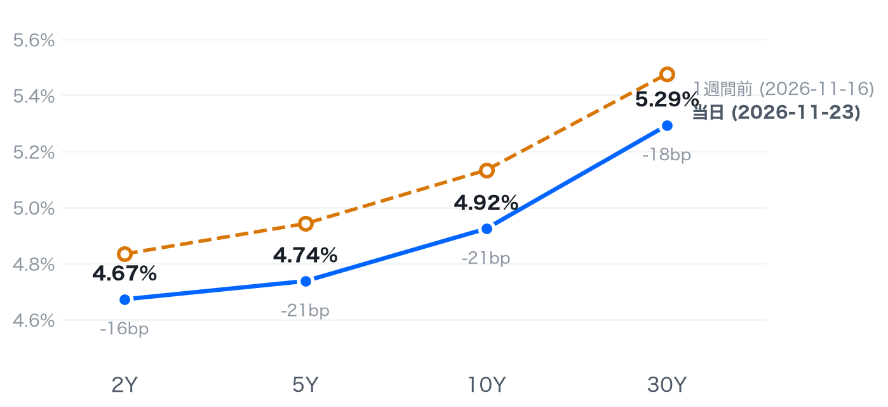

エヌビディア取締役会がジェンスン・ファン氏をCEOに復帰させると、米国株は2025年4月以降で最大の一日の上昇を記録し、半導体・メモリー・光通信関連銘柄がそろって急騰した。上昇はほぼすべてが寄り付き前に出たもので、通常取引中は始値付近にとどまった。
当社は今回の反発を、先週に一方向へ偏った売り持ち高の巻き戻しとみて、11月20日のAI価値再評価という解釈を修正する。反発が続くかどうかは、12月3日のファンCEOの上院証言と12月4日の四半期報告書提出期限を経て、テクノロジー業種が市場を上回って推移するかで確認する。
11月23日、エヌビディア取締役会が辞任受理から12日でジェンスン・ファン氏をCEOに復帰させ、エヌビディアは31.48%上昇して2003年以降で最高の一日となった。S&P500は4.73%上昇し、2025年4月以降で最大の一日の上昇を記録したと報じられた。先週のAIハードウェア売りで三指数がそろって大きく下げた後の最初の取引日で、半導体・メモリー・光通信関連銘柄が一斉に急騰した。
11月20日に設定した条件は、長期金利に限って満たされた。11月23〜24日に金利が上がらないのに、XLKが11月20日終値比でS&P500より3%ポイント以上戻せば解釈を修正するとしていたところ、XLKはS&P500を4.24%ポイント上回った。10年債利回りは0.8bp低下して「金利が上がらない」という条件を満たしたが、2年債利回りは3.8bp上昇し、その条件を満たさなかった。そこで、長期金利に限るという留保を付けたうえで、あの日の急落をAI企業価値の再評価とみた解釈を修正し、先週の下落には一方向に偏った売りとエヌビディアのガバナンス・ディスカウントが大きく混じっていたとみる。戻りの材料は、あの日に反論として挙げた上場に伴う供給やオプション満期ではなく取締役会の決定であるため、テクニカルな売りという説明がそのまま確認されたわけではない。今回の反発も同じ延長線上で、売り持ち高の巻き戻しとみる。上昇はほぼすべてが寄り付き前のギャップで生じ、均等加重指数が時価総額加重指数より上昇率が低く参加は限られ、エヌビディアのガバナンスとは関係のないアナログ半導体まで10%前後上昇した。キウム証券のキム・スンヒョク研究員は、今週はオプション満期後の売り偏りの戻りとジェンスン・ファン復帰への期待でテクニカルな反発を試みるが、チップ迂回流通の疑惑と会計調査のため トレンド転換は難しいとみて、レンジ相場を見込んだ。最も強い反論は、AIハードウェアの中心的な不確実性が消えたことによる再評価だ。ファン氏の復帰が先週の下落の主因だったリーダーシップの空白を埋め、今回の決定がAI関連取引の中心的な不確実性の一つを取り除くというストラテジストの評価も報じられた。市場がどちらを織り込んだかを示すオプション・ポジションの指標は入手できず、市場の期待と当社の解釈の差は分からない。
半導体・AIハードウェア業種の相対リターンは一日で大きく改善したが、一カ月の流れを戻すには至らなかった。テクノロジー業種は1カ月でみると、なお11.38%下落した状態にある。反発がポジションの巻き戻しなら、売り圧力が消えた後に相対的な強さは急速に冷め、不確実性の解消なら、一日で9%近い上昇がすでに価格に織り込まれており、今から追随した場合の期待値は不明確だ。そのため、この一日をもって新たな投資アイデアは出さない。判断の期間は12月4日まで8営業日で、その間に11月25日のPCE物価・GDP、12月3日のファンCEOの上院銀行委員会での証言、12月4日のエヌビディア四半期報告書(10-Q)の提出期限とAIインフラ関連の新規関税の発効が順に控える。11月26日の休場と27日の短縮取引が挟まり、取引が薄い期間も含まれる。XLKや半導体ETFでS&P500に対する相対的な強さを表現するコストは、借り入れ・オプションの資料がなく検討できない。ウォン建て現金と短期債の観点では、株式が急反発した日でも2年債利回りの戻りが小さく、米国の短期金利を政策経路の変化と読むには時期尚早だ。
ポジション巻き戻しの判断は、11月23日終値から12月4日終値までのXLKの累積騰落率からS&P500の累積騰落率を引いた値で確認する。この値が-3.44%ポイント以下なら判断を裏付け、+3.44%ポイント以上なら判断が弱まり、不確実性の解消に伴う再評価を優先的な説明とみて解釈を修正する。その間なら判断を保留する。方向が判断どおりに出ても、同期間の16:00 ET基準の10年債利回りの累積変化が+20bp以上なら、金利上昇でグロース株が弱まった影響が重なったとみて、原因は判断しない。
出所:MarketScreener、TechCrunch、CNN
| 指数 | 終値 | 騰落 | 基準日 |
|---|---|---|---|
| 日経225 | 56,436.65 | -5.06% | 11月20日 |
| ハンセン | 22,383.74 | -0.12% | 11月23日 |
| 上海総合 | 3,538.95 | +0.15% | 11月23日 |
| DAX | 25,337.27 | +2.15% | 11月23日 |
| FTSE100 | 10,480.82 | +1.30% | 11月23日 |
| ユーロ・ストックス50 | 6,074.47 | +2.23% | 11月23日 |
| VIX | 26.62 | -9.27p | 11月23日 |
日経平均は11月23日の値がないため、直前の取引日である11月20日の終値を掲載した。VIXの変化幅はポイントである。
アジアは米国と異なる動きとなり、域内でもまちまちだった。ハンセン指数は0.12%下落し、上海総合は0.15%上昇した。日経平均は11月23日の終値がない。アジア市場はエヌビディア取締役会の発表前に取引を終え、その材料を織り込めなかった。欧州は米国と同じ方向に先に上昇した。ユーロ・ストックス50が2.23%、DAXが2.15%、FTSE100が1.30%上昇し、欧州の現物市場は発表後も二時間余り取引が続いていた。11月のユーロ圏総合PMIは51.7と、10月と同じだった。
S&P先物(ES)は日曜18:00(ET)の最初の足が安値(6,992)で、月曜09:00(ET)の足で高値7,278を付け、4.09%の値幅で上昇した。ナスダック先物(NQ)は同じ時間帯に5.56%の値幅とさらに大きく動いた。反発は日曜夜から始まり、エヌビディア取締役会のファン氏復帰の発表は寄り付き直前の09:11(ET)ごろに伝わった。30分単位の資料では、ギャップのうち発表前後の寄与を分けることはできない。現物はS&P500が+4.59%、ナスダックが+7.18%、ラッセル2000が+1.93%と高く始まり、09:45(ET)にはS&Pグローバルの11月速報PMIが発表された。
S&P500の構成銘柄に同じウエートを適用すると、指数の上昇幅はより小さかった。均等加重指数のリターンが時価総額加重指数より2.12%ポイント低かったという意味だ。時価総額ウエートの大きい銘柄の上昇が、指数の上昇に相対的に大きく寄与した可能性を示唆する。ラッセル2000は高値圏で引け、S&P500とナスダックは日中値幅の中ほどで引けた。
高値圏・安値圏は、終値がその日の高値と安値の間のどこで終わったかを日々測って集めた履歴(指数3種の日次観測値2,256件)から、改めて測った境界で分ける。観測値を低い順に並べたとき、上から4分の1の位置以上なら高値圏、下から4分の1の位置以下なら安値圏での引けとする。
エヌビディアのガバナンスをめぐる出来事が株式を動かし、原油は別の材料であるイランの外交シグナルに押された。VIXは9.27ポイント低下の26.62だったが、直近2年(504営業日)のうちこれより高かった日が28日しかない水準にとどまっている。リスク選好が戻った日にもかかわらず、ドルと金が株式とともに上昇した。通常取引後の16:02(ET)には、ウィリアムズNY連銀総裁が、物価を抑えるにはやるべきことが残っており、追加措置は時間をかけて行われうると述べた。この発言は、この日の株式・米国債の終値には反映されていない。
出所:ING、CNBC
| 指数 | 終値 | 騰落率 |
|---|---|---|
| S&P500グロース | 126.45 | +6.91% |
| ナスダック | 24,089.56 | +6.51% |
| S&P500 | 7,237.17 | +4.73% |
| ラッセル2000 | 2,669.66 | +3.40% |
| ダウ・ジョーンズ | 49,595.31 | +3.01% |
| S&P500バリュー | 233.11 | +2.36% |
| セクター | 騰落率 |
|---|---|
| 情報技術 | +8.97% |
| 一般消費財 | +3.97% |
| 資本財・サービス | +3.90% |
| コミュニケーション・サービス | +3.57% |
| 素材 | +3.23% |
| 金融 | +1.98% |
| 公益事業 | +1.48% |
| ヘルスケア | +1.23% |
| 不動産 | +1.04% |
| 生活必需品 | -0.09% |
| エネルギー | -1.06% |
ファン氏復帰の一日で、S&P500は4.73%上昇の7,237で引け、ナスダックは6.51%上昇の24,090とさらに大きく上昇した。両指数とも平常時の一日の変動の4倍を超える上昇だ。ダウは3.01%、ラッセル2000は3.40%上昇し、グロース株が6.91%上昇してバリュー株(+2.36%)を大きく上回った。指数の水準は反発後も、直近2年(504営業日)の中ほどにある。
上昇は寄り付き前にほぼ終わっていた。S&P500は7,227で始まり、寄り付き直後に7,153まで押した後、7,296まで上昇し、始値とほぼ同じ7,237で引けた。ナスダックは始値を下回って引け、エヌビディアも10時ごろに171.50ドルの高値を付けた後、165.05ドルまで押した。一方、ラッセル2000は始値がその日の安値で、午後まで1.5%余りさらに上昇し、高値付近で引けた。通常取引中の値動きはこのように分かれた。ナスダックは10時の高値の後に始値の下へ下げて引け、ラッセル2000は始値より上の、14時の高値付近で引けた。
この日の中心的なニュースは、エヌビディア取締役会の決定だ。取締役会は米国政府高官らと協議した結果、ファン氏の復帰は国家安全保障を脅かさないと判断したとし、決定は全会一致だったと明らかにした。トランプ大統領は決定を公に歓迎し、エヌビディアの時価総額は一日で約9,520億ドル増えたと報じられた。発表は現物の寄り付き20分前に伝わったが、S&P500先物はそれより前の日曜夜から反発し始めており、30分より細かい資料がないため、寄り付きのギャップのうち発表前と後の寄与は分けられない。その幅を広げたのは、先週に一方向へ偏った売りだった可能性が高い。ブルームバーグを引用し、ゴールドマン・サックスが独自のパニック指数の急上昇を根拠に、今後一週間はシステム・モメンタム系資金の追加売り圧力が大きくなりうると警告し、CTAの大規模な売り越しで米国株のネットポジションがショートに転じたとの集計も出た、との見方もあった。反発後も恐怖・強欲指数が極端な恐怖の水準にとどまったと報じられており、投資家心理が一日で転換したとはみにくい。
指数が4.73%上昇した中で、テクノロジー業種の推定寄与度は+3.03%ポイントと、3分の2近くを占めた。一般消費財・サービスが+0.53%ポイント、コミュニケーション・サービスが+0.46%ポイント、資本財・サービスが+0.23%ポイント、金融が+0.21%ポイント、ヘルスケアが+0.12%ポイント、公益事業が+0.05%ポイントで続き、エネルギーは-0.03%ポイント、生活必需品は0.00%ポイントだった。業種の合計では説明できない部分は+0.13%ポイントである。11セクターのうち9セクターが上昇し、上昇はテクノロジー業種だけにとどまったわけではないが、指数を動かした力の大半はテクノロジー業種から生じた。
推定寄与度は、業種のウェートを直接得られないため、直近252営業日の指数・業種のリターンから推定したウェートを掛けた値である。素材と不動産はウェートを推定できず、除外した。
出所:TechCrunch、CNN、Benzinga
| 年限 | 終値 | 前日比(bp) | 1週間前 | 週間変化(bp) |
|---|---|---|---|---|
| 2Y | 4.672% | +3.8 | 4.834% | -16.2 |
| 5Y | 4.737% | +0.9 | 4.942% | -20.5 |
| 10Y | 4.924% | -0.8 | 5.133% | -20.9 |
| 30Y | 5.293% | -2.3 | 5.476% | -18.3 |
国債利回りはニューヨーク16:00 ET前後の場中値(前営業日・1週間前も同じ時刻)である。取引終了時の終値とは異なる場合がある。当日の値はレフィニティブ(ネイバー)、前営業日と1週間前の値はトレードウェブ(CNBC)に基づく。11月20日の記事までは、この表は17:05 ETの終値だったため、その記事の終値と、この表の前日の値は一致しない。
株式が急反発した日、国債利回りは短期ゾーンだけが上昇した。2年債は3.8bp上昇の4.672%、5年債は0.9bp上昇の4.737%で、10年債は0.8bp低下の4.924%、30年債は2.3bp低下の5.293%だった。10年債の動きは小幅だったが、水準は高い。10年債は直近2年(504営業日)のうちこれより高かった日が46日にとどまり、30年債は47日にとどまる。

イールドカーブのチャートの「本日」は11月23日、「1週間前」は11月16日の16:00 ET前後の値である。1週間前と比べると、2年債は16.2bp、10年債は20.9bp、30年債は18.3bp低い。
一日では、2年債が上昇し長期債が低下したため、2s10sは29.8bpから25.2bpへ4.6bp縮小した。短期金利の上昇を伴って平たん化するベア・フラットニングで、5s30sは55.6bpである。一週間でみると形が異なる。11月16日の同時刻より2年債が16.2bp低下する間に10年債は20.9bp低下し、長期債がより大きく下げるブル・フラットニングが進んだ。トレーダーがよりタカ派的なFRBに賭けて国債が売られたとの報道があり、短期ゾーンだけが上昇した当日の形はその説明と方向が一致する。ただ、12月以降の政策金利の織り込みを直接測る資料がなく、2年債の上昇が政策期待によるものか、先週の安全資産需要の一部が剥落したものかは確認できていない。ウィリアムズ総裁の発言は、この値が付いた後に出た。
利回りを実質金利と期待インフレ率に分解した最新の資料は11月20日のものである。その日の10年債の12bp低下のうち11bpが実質金利、1bpが期待インフレ率で、5営業日に広げると23bp低下のうち14bpが実質金利、9bpが期待インフレ率だった。同じ日のハイイールド・スプレッドは3.76%と、一日で24bp、5営業日で53bp拡大した。いずれもAI株急落の日までの観測値であり、この日の反発の内訳は含まない。株式の反発が信用市場にまで波及したかどうかは、11月23日のハイイールド・スプレッドが更新されてから判断できる。
5年先5年物の名目金利は5.13%、実質金利は3.01%(11月20日時点)。期待インフレ率側から計算した値と食い違わず、リスクプレミアムを含む値である。
出所:Reuters
| 入札 | 規模 | 落札 | 応札倍率 | 間接 | 直接 | ディーラー | 判定 |
|---|---|---|---|---|---|---|---|
| 2年債 | 690億ドル | 4.700% | 2.65倍(2.63倍) | 51.5% (56.5%) | 38.1% (32.0%) | 10.4% (11.5%) | 需要は強い |
財務省は11月23日、2年債690億ドルを落札利回り4.700%で販売した。規模は前回の同年限の入札(10月26日)の690億ドルと同じだった。応札倍率は2.65倍で、直近6回の平均2.63倍を0.02倍上回った。ディーラー比率は10.4%で、平均を1.1%ポイント下回った。海外の中央銀行・機関の需要の代理指標である間接落札比率は51.5%で平均を5.0%ポイント下回り、直接落札比率は38.1%で平均の32.0%を上回った。間接比率が減った分を直接応札者が取り、ディーラーが引き受けた量が平均より少なかったことから、この入札は需要は強いとみる。2年債利回りは同日16:00 ET前後に4.672%と、3.8bp上昇して終えた。
| 通貨ペア | 終値 | 騰落率 | 基準日 |
|---|---|---|---|
| DXY | 104.344 | +0.47% | 11月23日 |
| USD/KRW | 1,341.85 | -0.34% | 11月23日 |
| USD/JPY | 158.945 | +0.28% | 11月23日 |
| EUR/USD | 1.0904 | -0.59% | 11月23日 |
リスク選好が戻った日に、ドルはむしろ強含んだ。ドル指数は0.47%上昇の104.344で、直近2年(504営業日)のうち高い方から15%以内にある。ユーロ/ドルは0.59%下落の1.0904、ドル/円は0.28%上昇の158.945円だった。ウォンだけがドルに対して強く、ドル/ウォンは0.34%下落の1,342ウォンで、直近2年のうちこれより低かった日が27日にとどまる水準である。
株式が急反発した日もドルは強かったが、この上昇のうち安全資産需要と金利期待がそれぞれどれだけ寄与したかは、報道にも資料にもなく、切り分けられない。国債安を伝えた同じ報道は、ドル高もタカ派的なFRBへの賭けとあわせて伝えており、2年債利回りが上昇したことと方向が一致する。ユーロには個別の材料もあった。11月のユーロ圏総合PMIは10月と同水準にとどまり、フランスの縮小が深まった。相手国の金利をあわせて測っていないため、金利差がドルをどれだけ押し上げたかは確認できず、ウォンがドルに対して強かった理由も確認できない。
商品・為替はニューヨーク16:00 ETの価格で、前営業日の同時刻比である。清算値とは異なる場合がある。
出所:Reuters、ING
| 品目 | 終値 | 騰落率 |
|---|---|---|
| WTI | $80.19 | -4.50% |
| Brent | $86.63 | -3.96% |
| 天然ガス | $3.521 | -6.60% |
| 金 | $3,635.50 | +3.11% |
原油は株式とは反対に大きく下落した。WTIは4.50%安の80.19ドル、ブレントは3.96%安の86.63ドルで引け、天然ガスは6.60%安の3.521ドルである。金は3.11%上昇の3,635.50ドルと、平常時の一日の変動の2倍を超える上昇となった。
原油安は、イラン協議をめぐるシグナルと供給過剰の見通しが重なった結果とみる。トランプ大統領がイランとの外交に時間をさらに与える姿勢を示し、カタールが協議の再開を働きかけているとの報道が出た。同じ日にイランは米国の海上封鎖に「利用可能なあらゆる手段」で対抗すると表明し、米財務省はイラン関連24件に新たな制裁を科したが、価格は供給障害よりも協議再開の可能性に反応した。ドイツ銀行は、10月に観測された原油・石油製品の在庫が5,200万バレル増え、一日当たり約170万バレルの供給過剰だったとみた。WTIは取引序盤の高値83.95ドルから午後3時台の79.87ドルまで終日売られ、安値圏で引けており、売りは引けまで続いた。ブレントはWTIより6.44ドル高く、前営業日(6.23ドル)と同程度で、下落は両油種に均等に表れた。表のWTIは1月限、ブレントは2月限のため、価格差には限月の違いも含まれる。
金上昇の原因は確認されていない。ドルが強含んだ日に金も上昇しており、ドル経由では説明できない。金は米国の寄り付き前後に3,691ドルの高値を付けた後、上昇分の一部を失った。10年債の実質金利が11月20日までの5営業日で14bp低下し、保有コストが下がったという説明は可能だが、その値は11月20日までに測った変化であり、この日一日の上昇とは直接比べられない。11月23日の実質金利が更新されれば、金の上昇に実質金利の低下が伴っていたかどうかを判断できる。
商品・為替はニューヨーク16:00 ETの価格で、前営業日の同時刻比である。清算値とは異なる場合がある。一日の動きは、直近60営業日の平均的な一日の変動に対してWTIが1.56倍、金が2.13倍である。
出所:Rigzone、CBS
半導体業種がこの日の上昇の中心だった。エヌビディア(+31.48%)は、取締役会によるジェンスン・ファンCEOの復帰決定を受けて場中一時36%超上昇した後、上昇分の一部を失った。急騰は業種全体に波及し、マイクロン(+19.04%)、マーベル(+18.37%)、モノリシック・パワー・システムズ(+16.8%)、インテル(+16.34%)が上昇したほか、テキサス・インスツルメンツ(+10.4%)、クアルコム(+10.3%)、アナログ・デバイセズ(+9.49%)、NXP(+8.88%)、AMD(+6.85%)も上昇した。半導体・AIハードウェア関連株の先週の下落の一部を一日で取り戻した銘柄である。アナログ・マイコン銘柄の個別材料は確認されていない。市場の一部では、メリウス・リサーチのベン・ライツ氏がファンCEOの復帰でサプライチェーン関係、CUDAエコシステムへの支援、人材流出に対する懸念が大きく後退したとして、エヌビディアの投資判断を「ホールド」から「買い」に引き上げ、エヌビディアがより高いバリュエーション倍率を得られるとの見方も出た。
アルファベット(+6.34%)とメタ(+6.55%)は、コミュニケーション・サービス業種の上昇を牽引した。両社固有の材料は確認されておらず、同じ日にAI関連取引全般が息を吹き返したとの報道の一部として言及されただけである。
クラウドストライク(-8.92%)は、ゼットスケーラーを439億ドル規模の全額株式交換方式で買収すると発表した後に下落し、ソフトウェア業種の下落を拡大させた。ゼットスケーラーの株主は1株当たりクラウドストライク株1.135株を受け取り、金曜日の終値に対し34%のプレミアムを得る。発表後、ゼットスケーラーは約18~20%上昇したと報じられた。
エクソンモービル(-1.93%)は、エネルギー業種の下落を拡大させた。同社固有の材料は確認されておらず、同じ日の原油安と連動して動いた。
テスラ(+11.46%)は、一般消費財・サービス業種の上昇を押し上げた。確認できた材料はない。
出所:CNN、CNBC、ABC
新たに公表されたFRED指標がないため、米国の景気局面は成長横ばい・物価再加速のコストプッシュを10日連続で維持する。成長スコア0.073は横ばい、物価スコア0.722は利用可能な指標ベースで再加速を示し、スコアは現在の局面にとどまる。局面を見直す材料となるのは、11月25日のPCE物価とGDPである。
雇用軸は改善を維持し、非農業部門雇用者数と時間当たり賃金の明確な改善が判定を支える。雇用軸 +0.451
| 指標 | Actual | Forecast | Previous | 発表日 | 予想比 | 前回比 | トレンド |
|---|---|---|---|---|---|---|---|
| 求人件数(9月) | 7,523K | — | 7,190K | 2026-09基準月 | 改善 | 横ばい・3カ月平均 7,435K → 7,349K | |
| 新規失業保険申請件数 | 203,000 | — | 202,000 | 2026-11-19 (11月14日の週) | 悪化 | 横ばい・4週平均 198K → 198K | |
| 新規申請件数4週平均 | 197,750 | — | 195,750 | 2026-11-19 (11月14日の週) | 悪化 | 改善(小幅)・4週平均 199K → 196K | |
| 失業保険継続受給者数 | 1,763,000 | — | 1,693,000 | 2026-11-19 (11月7日の週) | 悪化 | 悪化(小幅)・4週平均 1,710K → 1,717K | |
| 非農業部門雇用者数変化(10月) | +165K | — | +60K | 2026-11-06 | 改善 | 改善(明確)・3カ月平均 +28K → +137K | |
| 失業率(10月) | 4.1% | — | 4.2% | 2026-11-06 | 改善 | 改善(わずか)・3カ月平均 4.20% → 4.13% | |
| 平均時給 MoM(10月) | +0.37% | — | +0.26% | 2026-11-06 | 改善 | 改善(明確)・3カ月平均 +0.20% → +0.32% |
生産・活動軸は悪化を維持し、中古住宅販売の明確な減少と貿易収支の赤字拡大が判定を支える。スコアに含まれないS&P Globalの11月速報PMIは総合54.6と、10月の55.9から低下して4カ月ぶりの低水準となったが、50を上回った。生産・活動軸 -0.652
| 指標 | Actual | Forecast | Previous | 発表日 | 予想比 | 前回比 | トレンド |
|---|---|---|---|---|---|---|---|
| S&P Global米総合PMI速報(11月) | 54.6 | — | 55.9 | 2026-11-23 | — | — | |
| S&P Global米サービスPMI速報(11月) | 54.7 | — | 56.1 | 2026-11-23 | — | — | |
| S&P Global米製造業PMI速報(11月) | 54.5 | — | 54.9 | 2026-11-23 | — | — | |
| フィラデルフィア連銀製造業景気指数(11月) | 6.3 | — | 20.9 | 2026-11-19 | 悪化 | 悪化(明確)・3カ月平均 33.0 → 21.7 | |
| 住宅着工件数(10月) | 1,309K | — | 1,191K | 2026-11-18 | 改善 | 悪化(緩やか)・3カ月平均 1,330K → 1,260K | |
| 鉱工業生産 MoM(10月) | -0.43% | — | +0.73% | 2026-11-17 | 悪化 | 悪化(わずか)・3カ月平均 +0.19% → +0.07% | |
| 耐久財受注 MoM(9月) | +1.91% | — | +0.14% | 2026-09基準月 | 改善 | 悪化(わずか)・3カ月平均 +1.70% → +0.98% | |
| 製造業受注 MoM(9月) | +1.84% | — | +0.33% | 2026-09基準月 | 改善 | 悪化(わずか)・3カ月平均 +1.35% → +0.98% | |
| 建設支出 MoM(9月) | -1.85% | — | +1.98% | 2026-09基準月 | 悪化 | 改善(わずか)・3カ月平均 -0.18% → -0.01% | |
| 新築住宅販売件数(9月) | 676K | — | 680K | 2026-09基準月 | 悪化 | 改善(わずか)・3カ月平均 652K → 668K | |
| 中古住宅販売件数(10月) | 375万 | — | 397万 | 2026-11-12 | 悪化 | 悪化(明確)・3カ月平均 4,127K → 3,883K | |
| 貿易収支(9月) | -$105.05B | — | -$105.74B | 2026-09基準月 | 改善 | 悪化(明確)・3カ月平均 -66.6 → -101.2 | |
| 実質GDP QoQ年率(第3四半期) | +3.4% | — | +2.2% | 2026年第3四半期 | 改善 | — |
消費軸は改善を維持するが、根拠は小売売上高一つで、3カ月平均が+0.28%から+0.83%に上昇した。消費軸 +0.42
| 指標 | Actual | Forecast | Previous | 発表日 | 予想比 | 前回比 | トレンド |
|---|---|---|---|---|---|---|---|
| 小売売上高 MoM(10月) | +0.21% | — | +0.83% | 2026-11-17 | 悪化 | 改善(緩やか)・3カ月平均 +0.28% → +0.83% | |
| ミシガン大学消費者信頼感指数(10月) | 48.0 | — | 48.1 | 2026-11-20 | 悪化 | 横ばい・3カ月平均 49.8 → 49.3 |
物価軸は再加速を維持する。物価軸は8指標中6指標で算出した。2025年10月CPIの比較基準値が公式に提供されていないため、2026年10月の前年同月比指標2つを計算から除外した。再加速は利用可能な指標ベースのシグナルであり、欠測次第で物価判断が変わり得る。消費者物価と生産者物価の3カ月平均の上昇が判定を支える。物価軸 +0.722
| 指標 | Actual | Forecast | Previous | 発表日 | 予想比 | 前回比 | トレンド |
|---|---|---|---|---|---|---|---|
| PPI最終需要 MoM(10月) | +0.35% | — | +1.41% | 2026-11-13 | 下落 | 再加速(明確)・3カ月平均 +0.17% → +0.72% | |
| CPI MoM(10月) | +0.35% | — | +0.65% | 2026-11-10 | 下落 | 再加速(明確)・3カ月平均 +0.04% → +0.46% | |
| Core CPI MoM(10月) | +0.30% | — | +0.33% | 2026-11-10 | 下落 | 再加速(明確)・3カ月平均 +0.14% → +0.31% | |
| PCE物価 YoY(9月) | 3.65% | — | 3.44% | 2026-09基準月 | 上昇 | 膠着・3カ月平均 3.62% → 3.49% | |
| Core PCE YoY(9月) | 3.12% | — | 3.03% | 2026-09基準月 | 上昇 | 膠着・3カ月平均 3.10% → 3.05% | |
| ミシガン大学1年先期待インフレ率(10月) | 4.7% | — | 4.6% | 2026-11-20 | 上昇 | 膠着・3カ月平均 4.53% → 4.43% |
前回比はActualをPreviousと比べたもので、トレンドは直近3カ月平均をその前の3カ月平均と比べたものである(週間の失業保険申請件数は4週平均同士)。トレンドの強さは、その指標が普段動く幅に対する大きさで、小さな変化は横ばいとみなす。四半期指標であるGDPは二つの比較結果が同じ数字になるため、前回比のみ掲載する。
FRBの次の一手は12月9日のFOMCでの25bp利上げという判断と時期を維持する。集計サイトがCME FedWatchを引用して伝えた11月23日の値は12月利上げ91.4%、据え置き8.6%で、測定時刻は確認できていない。ウィリアムズNY連銀総裁は引け後、追加措置は時間をかけて行われ得ると述べたが、12月会合への期待には直接答えなかった。
欠測で物価判断は確定していないが、利用可能な指標ベースの物価再加速シグナルが11月25日のPCE物価につながれば、12月以降の追加利上げ論議が勢いを得る可能性がある。
12月9日のFOMCまでにFRBの声明や議長発言が追加利上げの余地を閉ざせば、12月利上げ中心の判断を撤回する。11月25日の10月PCE物価が予想を下回り、CME FedWatchの12月利上げ確率が消費者物価発表前の報道値(84%)を下回れば、12月利上げ中心の判断を修正する。
資産別の方向とその根拠は前日と同じだ。
出所:CNBC、gate.com
| 指数 | 順位(5取引日前) | 1カ月 | 3カ月 | SPY比3カ月 | 対SPY超過リターンの変化 | 12-1モメンタム | ボラティリティ | 1日VaR 95% | ベータ | 50/200日線 | 52週高値比 |
|---|---|---|---|---|---|---|---|---|---|---|---|
| 一般消費財 XLY | 5(5) | +3.4% | -0.7% | +4.8%p | -0.3%p | +3.1% | 23.2% | 1.8% | 0.95 | 上/上 | -5.5% |
| エネルギー XLE | 7(8) | -13.6% | -3.0% | +2.5%p | -1.4%p | +60.5% | 25.5% | 3.0% | -0.01 | 下/上 | -14.5% |
| 金融 XLF | 9(7) | -0.5% | -4.2% | +1.2%p | -3.0%p | +11.1% | 17.9% | 1.8% | 0.57 | 下/上 | -6.0% |
| 住宅建設 XHB | 10(12) | +1.4% | -5.7% | -0.3%p | +0.5%p | +0.1% | 30.5% | 2.5% | 0.78 | 上/下 | -17.0% |
| 超大型株Top 50 XLG | 11(13) | -6.2% | -5.8% | -0.4%p | +0.5%p | +10.0% | 24.3% | 2.3% | 1.19 | 下/下 | -10.2% |
| ソフトウェア IGV | 12(10) | -13.9% | -6.5% | -1.0%p | -1.4%p | +9.7% | 33.3% | 3.6% | 1.13 | 下/上 | -15.4% |
| 銀行 KBE | 13(15) | -3.5% | -6.6% | -1.1%p | +1.6%p | +20.5% | 18.3% | 1.7% | 0.47 | 下/下 | -10.8% |
| 資本財・サービス XLI | 14(17) | -1.3% | -8.7% | -3.2%p | +3.0%p | +12.6% | 21.1% | 2.0% | 0.87 | 下/下 | -12.7% |
| 小型株 IWM | 17(16) | -3.6% | -11.0% | -5.5%p | 0.0%p | +21.6% | 20.9% | 1.9% | 0.91 | 下/下 | -12.7% |
| 防衛 ITA | 18(23) | +1.6% | -12.2% | -6.8%p | +6.8%p | +2.0% | 23.9% | 2.2% | 0.78 | 下/下 | -18.8% |
| 小型成長 IWO | 19(20) | -3.1% | -13.1% | -7.6%p | +0.6%p | +15.4% | 25.9% | 2.4% | 1.14 | 下/下 | -15.3% |
| 送電網 GRID | 20(21) | -5.1% | -13.8% | -8.3%p | +3.2%p | +12.0% | 33.7% | 4.3% | 1.33 | 下/下 | -22.3% |
| モメンタム・ファクター MTUM | 23(22) | -11.6% | -15.2% | -9.8%p | +2.4%p | +22.4% | 37.0% | 3.7% | 1.56 | 下/下 | -25.8% |
| 半導体・AIハードウェア SMH | 24(24) | -12.7% | -17.2% | -11.8%p | +3.8%p | +62.7% | 59.6% | 6.0% | 2.59 | 下/下 | -31.2% |
| 金属・鉱業 XME | 25(25) | -11.7% | -29.6% | -24.2%p | -6.7%p | +10.6% | 38.1% | 4.1% | 1.44 | 下/下 | -35.9% |
| 指数 | 順位(5取引日前) | 1カ月 | 3カ月 | SPY比3カ月 | 対SPY超過リターンの変化 | 12-1モメンタム | ボラティリティ | 1日VaR 95% | ベータ | 50/200日線 | 52週高値比 |
|---|---|---|---|---|---|---|---|---|---|---|---|
| 生活必需品 XLP | 1(2) | +2.4% | +5.2% | +10.6%p | -1.6%p | +17.7% | 17.6% | 1.4% | 0.02 | 上/上 | -2.4% |
| ヘルスケア XLV | 2(1) | +0.1% | +2.8% | +8.2%p | -6.2%p | +20.4% | 18.6% | 2.1% | 0.38 | 上/上 | -5.4% |
| 低ボラティリティ SPLV | 3(4) | +1.6% | +1.7% | +7.1%p | +0.1%p | +7.8% | 12.5% | 1.0% | 0.20 | 上/上 | -2.4% |
| 公益事業 XLU | 4(6) | +1.8% | +0.8% | +6.2%p | +1.9%p | -0.5% | 15.7% | 1.4% | 0.24 | 上/下 | -7.3% |
| 配当 SCHD | 6(3) | -2.5% | -1.3% | +4.2%p | -3.9%p | +37.1% | 14.2% | 1.4% | 0.32 | 上/上 | -5.0% |
| クオリティ・ファクター QUAL | 8(9) | -3.3% | -3.6% | +1.8%p | -0.2%p | +18.8% | 16.9% | 1.6% | 0.81 | 下/上 | -5.4% |
| 指数 | 順位(5取引日前) | 1カ月 | 3カ月 | SPY比3カ月 | 対SPY超過リターンの変化 | 12-1モメンタム | ボラティリティ | 1日VaR 95% | ベータ | 50/200日線 | 52週高値比 |
|---|---|---|---|---|---|---|---|---|---|---|---|
| 欧州 VGK | 15(11) | -2.0% | -9.1% | -3.6%p | -3.3%p | +14.1% | 17.1% | 1.5% | 0.64 | 下/下 | -9.1% |
| 日本 EWJ | 16(14) | -7.7% | -9.1% | -3.7%p | -1.2%p | +23.5% | 24.7% | 2.1% | 1.11 | 下/下 | -12.5% |
| 新興国 EEM | 21(18) | -6.7% | -14.0% | -8.6%p | -2.0%p | +19.0% | 31.3% | 2.9% | 1.41 | 下/下 | -18.8% |
| 中国 MCHI | 22(19) | -4.0% | -14.6% | -9.2%p | -1.9%p | -18.0% | 18.9% | 1.9% | 0.41 | 下/下 | -26.3% |
| 指数 | 順位(5取引日前) | 1カ月 | 3カ月 | SPY比3カ月 | 対SPY超過リターンの変化 | 12-1モメンタム | ボラティリティ | 1日VaR 95% | ベータ | 50/200日線 | 52週高値比 |
|---|---|---|---|---|---|---|---|---|---|---|---|
| S&P 500 SPY | – | -5.0% | -5.5% | 0.0%p | – | +17.7% | 20.1% | 1.9% | 1.00 | 下/下 | -7.3% |
| S&P 500均等加重 RSP | – | -1.7% | -3.7% | +1.8%p | – | +20.8% | 15.2% | 1.5% | 0.63 | 下/上 | -4.7% |
| ナスダック100 QQQ | – | -7.6% | -8.3% | -2.8%p | – | +20.8% | 31.0% | 2.9% | 1.48 | 下/下 | -14.3% |
価格ベースの市場局面は11月16日から6取引日連続で短期弱気で、直前の局面は横ばいだった。この日の急反発でもSPYは722.29と50日線(759.30)の下にあり、52週高値比の下落率が-7.29%と短期弱気の基準(-5%)を超えている。SPYは200日線(730.47)もなお下回るが、200日線が20取引日前の724.41より高いため、長期弱気の条件には当たらない。一日の反発では局面は変わらず、短期弱気の条件を外れた状態が3取引日続いて初めて局面が変わる。
11月16日と比べると、半導体・AIハードウェアと防衛の相対リターンが改善し、金属・鉱業は悪化した。半導体・AIハードウェアのSPY対比3カ月相対リターンは-11.75%pで一週間に3.84%p改善したが、順位は25本のうち24位のままだ。先週の急落とこの日の反発が同じ一週間に含まれるため改善幅は大きくなく、3カ月リターンは-17.21%と依然大きく劣後している。防衛は-6.75%pで依然市場に劣後するものの、6.82%p改善して23位から18位に上昇した。金属・鉱業は-24.16%pと6.68%p悪化し、最下位にとどまった。
リスクシグナルは依然まちまちだ。VIXは26.62に低下したが、過去2年でこれより高かった日は28日しかない水準で、ハイイールドスプレッドは11月20日に3.76%と、5取引日で53bp拡大した。同日、10年実質金利は2.77%と5取引日で14bp低下し、FRBのバランスシートで測った流動性の方向は11月18日時点で緩和、NFCIは11月13日時点で平均より緩和的だ。価格と信用はなおリスク縮小を、流動性指標はその逆を指している。
ファン氏復帰日のAIハードウェア急反発を、先週偏った売りポジションの巻き戻しとみる判断(11月23日)を新たに立てる。起点は11月23日終値のXLK 162.38、S&P 500 7,237.17である。11月23日終値比の12月4日終値までのXLK累積騰落率からS&P 500累積騰落率を引いた値が-3.44%p以下なら判断を裏付け、+3.44%p以上なら判断が弱まり、不確実性の解消に伴う再評価を優先的な説明とみる。その間である場合や、両日の終値がない場合は判断を保留する。方向が判断どおりに出ても、同期間の16:00 ET基準の10年債累積変化が+20bp以上なら、原因は判断しない。3.44%pは、終点が10月27日~11月23日の直近20本の8取引日区間における同じ差の絶対値平均で、二つの指数の変動性の差は補正していない。
AIハードウェアの全面安を、決算・上場を控えたリスク縮小とみる判断(11月16日)は、結論日のこの日、方向も原因も判断できないまま閉じる。11月16日終値比でXLKは1.445%、S&P 500は2.419%下落し、差は+0.975%pで判断区間(±3.03%p)の内側で終わった(前取引日は-2.734%p)。最後の一日で差を戻したのは、決算・上場後のリスク縮小の解消でも、需要・規制の再評価の確認でもなく、取締役会でのファン氏復帰というガバナンス上の出来事だった。10年債-20bpの条件は、国債利回りの基準時刻が17:05 ET終値から16:00 ET値に変わったため同じ基準で測れず、16:00 ET値同士では11月16日比-20.9bpだ。
エヌビディアの決算がジェンスン・ファン氏の辞任後に付いたディスカウントを縮小し、エヌビディアが市場をアウトパフォームするとの判断(11月17日)は、一日で裏付けの基準を超えた。11月17日終値比でエヌビディアは155.46ドルから165.05ドルへ6.169%上昇し、S&P 500は1.408%下落、差は+7.577%pで、裏付け基準(+6.21%p)を1.37%p上回った(前取引日は-13.393%p)。同期間にXLKは0.539%下落してエヌビディアより弱く、原因を判断しない条件には該当しなかった。ディスカウントを縮小した材料は決算ではなく取締役会でのファン氏復帰であり、これはこの判断が掲げた決算経路ではなく、反論が指摘したガバナンスリスクが低下した経路だ。結論は事前に定めたとおり11月24日終値で出し、方向が基準を満たしても原因は反論側の材料で説明されることを併せて記す。
AI株急落日の2年債利回りの低下を、株の急落に伴う安全資産買いとみる判断(11月20日)は、初日の裏付けシグナルが弱かった。この判断の基準はネイバー17:05 ET終値だが、国債利回りの基準時刻がこの日から16:00 ET値に変わった。同じ16:00 ET値同士で見ると、2年債は11月20日の4.634%から4.672%へ3.8bp上昇して判断区間(±10.84bp)の内側にあり、S&P 500は同期間に4.729%上昇した。株が大きく反発したのに2年債の戻りが小さく、株が落ち着けば安全資産需要が抜けるとの判断を裏付けるシグナルはまだ弱い。結論は11月25日終値で出し、その日の17:05 ET終値が記録されなければ、事前に定めた規則に従い判断を保留したまま閉じる。
継続失業保険申請の急増をミシガン州の一週間限りの一時要因とみる判断(11月19日)は、新たなデータがなく据え置きだ。11月25日08:30 ETの労働省発表で、11月14日週の季節調整済み継続受給件数の前週改定値比の変化が-17,150件以下なら裏付けられ、+17,150件以上なら弱まり、労働市場の減速拡大を優先的な説明とみる。方向が合っていても、ミシガン州の季節調整前の継続受給件数が49,750件を超える水準にとどまれば、原因は判断しない。
11月20日の戦略コメントに付けた条件、すなわち金利が上がらないのにXLKがS&P 500より3%p以上戻せば解釈を修正するという条件は、この日10年債利回りが下がったため長期債基準でのみ満たされ(2年債利回りは上昇した)、その但し書きを付けて当日のAI価値再評価の解釈を修正した。同じ記事の最後の条件、すなわち2年債と実質金利が上がる日にハイテク株がさらに下げれば金利再評価を優先的な説明とみるという条件は成立しなかった。2年債は上昇したがハイテク株は大幅に上昇し、実質金利のこの日の値はまだない。いずれの判断も実行したポジションがなく、パフォーマンスは測れない。
相場データはYahoo Finance、米国債利回りはネイバーファイナンス(リフィニティブ、欠損日はCNBC・トレードウェブ)、経済指標はFREDと各発表機関(BLS・BEA・Censusなど)、その他の内容は本文に明記した出所から取得した。本レポートは投資助言ではなく、特定資産の売買を勧誘するものではない。投資判断とその結果に対する責任は、すべて投資家本人にある。